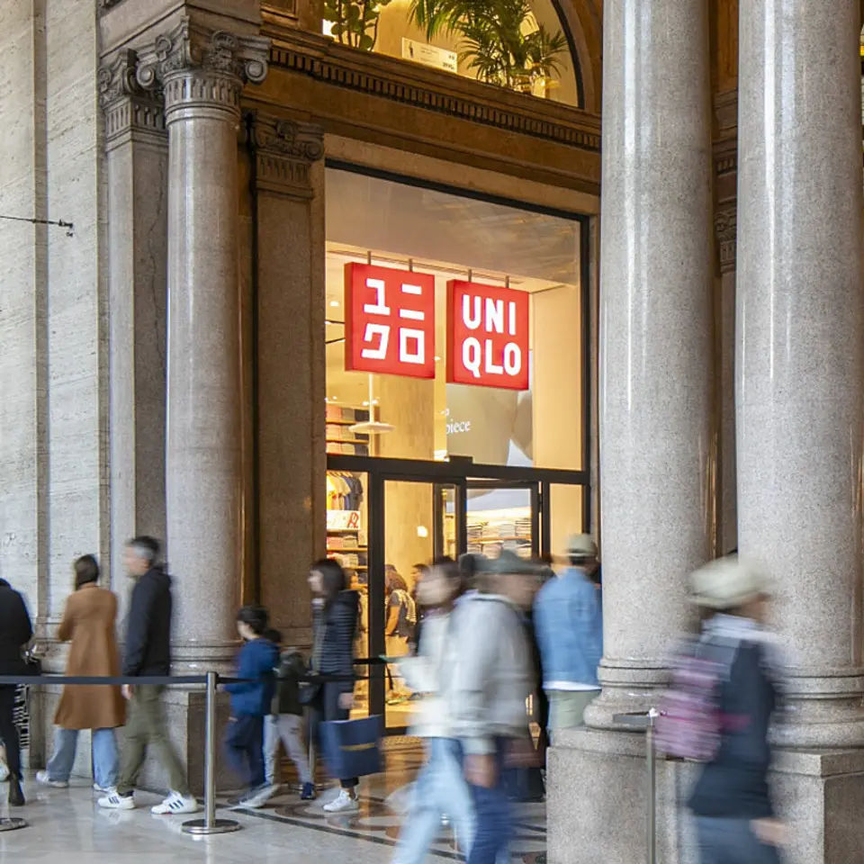
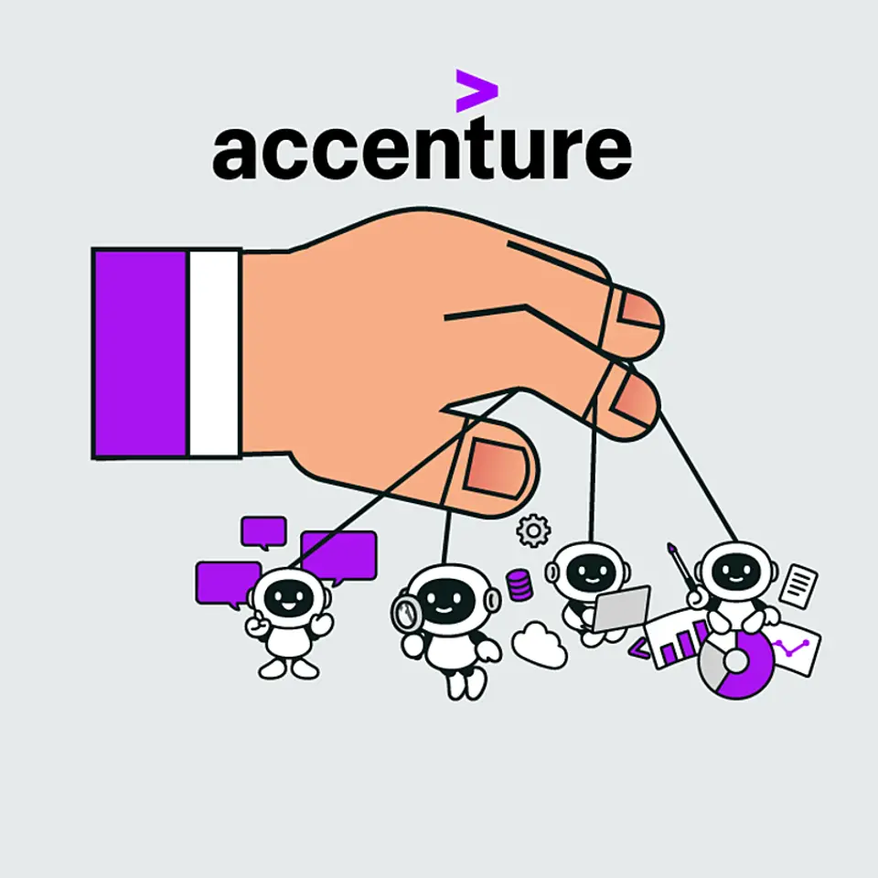
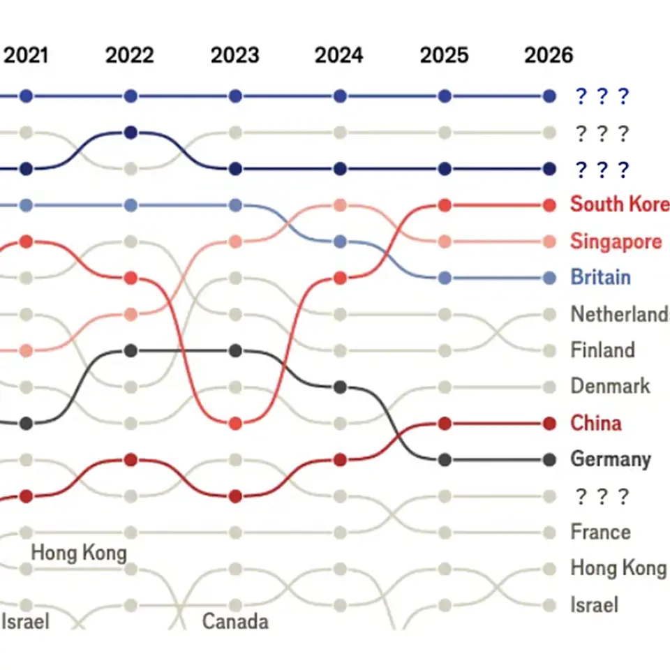

01【大騒動】AIが「新発見」を大量生産している
発行日時：2026年10月9日 05:30 JST
あなたに関係ありそうな理由
AIの出力を仕事で使うほど、答えを得る速さだけでなく、検証し説明できるかをどう担保するかが重要になります。
概要
OpenAIは10月6日、まだ公開していない社内モデルを使い、数学で300件以上の成果と722本の論文を得たと発表した。記事によると、約4000問を与えた結果で、1件当たり平均してChatGPT Proを3時間動かすほどの計算資源を使ったという。成果には、計算機科学の未解決問題として知られるユニークゲームズ予想に関わるものも含まれる。論文の一部はコンピューターで検証できる形式で公開されたが、専門家が直ちに理解できる分かりやすい道筋まで提供されたわけではない。正解らしき結果が先に現れ、人間がその意味や使い方を後から追う状況が始まっている。
記事が描くのは、単にAIが難問を解いたという話ではない。長年一つの問題に取り組み、新しい証明法や概念を積み上げてきた数学者にとって、結果だけを急に渡される感覚は、山を登る過程を飛ばして山頂へ移されたようなものだという。計算機科学者スコット・アーロンソン氏は、妻が研究してきた問題が対象に含まれた経緯を紹介し、証明の筋道が見えにくいことへの戸惑いを伝える。テレンス・タオ氏は、AIが解決済みの印を付けることで、人間が別の道筋を探る文化が薄れる副作用を懸念する。一方で、新しい問題を見つけ、説明を整え、成果を別分野へ結び付ける仕事が増えると受け止める研究者もいる。
論点は、AIが正しい答えを出したかだけにとどまらない。記事では、数学の成果をAI企業が性能を示す材料にも使う構図が紹介される。過去には未発表の研究との関係を巡り、学術界とAI企業の対立も起きた。表示コメントでは、数学では証明の正当性の確認が解決の条件になり得る一方、物理や社会で使うなら観測や実験で確かめる工程が残るとの指摘があった。仮説を大量に作れることと、現実に通用するかを選別できることは別である。
仕事に引き寄せるなら、AIの提案を採用する前に、根拠、検証方法、適用範囲を記録する習慣が必要になる。複雑で説明しにくい結果でも、再現可能な評価や別のモデル・専門家による確認があれば、判断材料として扱える。今後は数学の新成果がどの程度検証され、研究の進め方や教育、工学の設計にどう使われるかを見るべきだ。速く答えを得る技術と、答えを理解し責任を持って使う仕組みを分けて考えることが、このニュースの実務的な読みどころになる。
仕事や会話で使える一言
「答えを出す速度が上がるほど、検証方法と説明責任を先に設計する必要がありますね。」
NewsPicks原文を読む
02【最強決算】ユニクロの欧米事業が「ドル箱」すぎる
発行日時：2026年10月9日 05:30 JST

あなたに関係ありそうな理由
海外成長を読むときは、出店数だけでなく、商品の評価、利益率、物流・在庫への投資まで分けて見ると実態が分かります。
概要
ファーストリテイリングが8日に発表した2026年8月期決算では、売上高が前期比17％増の4兆円近くとなり、5期連続で過去最高を更新した。営業利益は32％増の7431億円、営業利益率は17％から19％へ上がった。記事が最も注目するのは海外ユニクロで、アジア、北米、欧州の4エリアすべてが二桁増収となった点だ。北米は35％増、欧州は39％増で、両地域の売上高は合計で約9000億円に達した。売上高ではH&Mを上回り、同社は世界2位のアパレル企業になったとされる。
成長を支える要因として記事は、地域を問わず「着心地・快適さ」が消費者の評価で最上位になっていることを挙げる。価格やデザインへの評価は地域ごとに違うが、日常着として使いやすいという価値が共通して選ばれている。そこへ主要都市の一等地に旗艦店を置く戦略を重ねる。売上上位には銀座店に続きニューヨーク5番街店、パリのオペラ店が並び、欧米でも認知だけでなく売り上げを作る店になっている。北米ではニューヨーク、サンフランシスコ、マイアミ、欧州でも英国やフランスで出店を進める計画だ。
好調さは売上だけでは測れない。記事によれば、各地域の営業利益率は20％前後で、立て直し中の中華圏でも16％を確保した。倉庫の自動化やデータ活用に投資し、物流効率と在庫管理を改善していることが利益率を支える。2027年8月期も営業利益は12％増の8300億円を見込み、年間配当は前期の850円から900円へ増やす計画だ。一方、決算と予想は市場想定にほぼ沿ったため、決算発表後の株価は夜間取引でやや下落した。最高益という見出しと、市場が織り込んでいた成長の度合いは分けて見る必要がある。
表示コメントでは、北米での店舗数はユニクロ87店に対しZARAは約100店、カナダを含めてもユニクロは126店で、成長余地はなお大きいという見方が出ていた。他方で、競合との比較を店舗数だけで終わらせず、着心地・品質・価格のバランス、売れ残りリスク、旗艦店が採算を取れるかを確かめる必要がある。今後は年間50億円以上を稼ぐ大型店を60店から200店へ増やす目標がどこまで進むか、海外の高い利益率を維持できるか、国内の店舗再編が収益にどう表れるかに注目したい。
仕事や会話で使える一言
「海外出店は店舗数ではなく、日常着として選ばれる理由と店ごとの採算まで見たいですね。」
NewsPicks原文を読む
03【インテルCTO】エヌビディアは、95年のインテルに似ている
発行日時：2026年10月9日 05:30 JST
あなたに関係ありそうな理由
優位な製品や仕組みを持つ企業でも、顧客の制約が変わる局面では別の評価軸が生まれることを考える材料になります。
概要
エヌビディアのGPUがAI半導体で強いのは、チップ単体の性能だけではない。インテルのCTO、プシュカー・ラナーデ氏は記事の取材で、AIモデルを動かすためのソフトウェア基盤を20年かけて整えたことが同社の競争優位だと説明する。開発者は各種ツールを使い、GPUの能力を引き出せる。一方で他社チップに替えるには、ソフトを書き直し、再検証する負担がある。少し優れたハードを出すだけでは、既存の仕組みを動かす利用者を移せない。この見方が、記事の中心にある。
ラナーデ氏は、その構図を1995年ごろのインテルになぞらえる。当時、より効率的なRISC型のCPUを掲げる競合はあったが、世の中にはx86を前提にしたソフトが広がっており、置き換えは進まなかった。インテルが王座を失った転機は、性能競争ではなく、PCからスマートフォンへというプラットフォームの変化だった。モバイルでは、同社が軽視していた低消費電力の設計が決定的になった。過去の強みがそのまま次の時代の強みになるとは限らないという歴史を、現在のAI市場に重ねている。
では、エヌビディアを揺るがす次の転換とは何か。ラナーデ氏は、まだ発明されていないものだと断った上で、最大の技術的障壁は消費電力だと話す。GPUは高性能だが電力を多く使うため、桁違いに低い消費電力を可能にする技術が次の基盤になる可能性がある。インテルが備える候補は、量子コンピューティング、脳の働きを模すニューロモルフィック、チップ間接続を改善するフォトニクス、メモリー、新素材の5分野だ。特にニューロモルフィックは、必要な部分だけを動かす脳の仕組みを参考に、計算時の電力を抑える考え方として紹介される。
記事は、インテルがモバイルとAIの波を逃した後、次の変化へ備え直している過程も描く。コメントでは、AIデータセンターの電力と熱の問題は物理的な制約であり、ソフトが強くても半導体の構成を変えざるを得ない局面があり得るとの見方が示された。今後見るべきなのは、競合がGPUより速いチップを出すかだけではない。電力、冷却、データ移動、既存ソフトとの互換性を一緒に解く技術が育つかである。調達や設備投資を考える側も、現在の性能と、次の制約を解く仕組みを分けて比較したい。
仕事や会話で使える一言
「今の強みを崩すのは、同じ土俵の性能差より、顧客の制約を変える次の基盤かもしれませんね。」
NewsPicks原文を読む
04【株価急騰】アクセンチュアCEO「AIは追い風」と断言の理由
発行日時：2026年10月9日 05:30 JST

あなたに関係ありそうな理由
AI導入支援の価値は資料作成の速さではなく、データ・業務・運用を変え、成果に結び付けられるかで決まります。
概要
アクセンチュアは、AIがコンサルティング需要を奪うという懸念を、2026年8月期の決算でいったん押し返した。売上高は741億8300万ドルで、現地通貨ベースでは前期比5％増となり、会社予想の3〜4％増を上回った。調整後営業利益率は15.8％、新規受注額は845億4000万ドルだった。決算発表当日の株価は一時約24％上昇し、終値でも約16％高となった。AIが調査、分析、資料作成を代替するため大手コンサルは縮むという見立てに対し、導入・運用の需要がまだ大きいことを示した形だ。
記事が挙げる理由は、AIを渡されただけで企業の仕事が変わるわけではない点にある。顧客のデータをつなぎ、既存システムに合わせ、十分な規模で使える環境を整える作業が残る。2026年8月期には400社超が同社と高度なAI案件を始めたという。特にアジア太平洋は現地通貨ベースで8％増と、米州、欧州・中東・アフリカの4％増を上回った。一方で、AI導入支援が長く続けばよいという単純な話でもない。顧客が自らAIを使いこなせるようになれば、支援側の仕事の形は変わる。
同社は人と時間を投入して請け負う従来型の人月モデルからも離れようとしている。成果に基づく契約を含む固定価格案件は受注額の65％超となり、顧客の業務を継続して運営・管理するマネージドサービスは売上高373億ドルで6％増、コンサルティングの3％増を上回った。通信速度測定サービスSpeedtestを持つOoklaの買収も、人員数だけに頼らないサブスクリプションやライセンス収入を広げる狙いとして紹介される。AIで運営業務を効率化し、成果報酬を維持できるかが収益性を左右する。
さらに記事は、サイバーセキュリティを成長分野に置く。Dragosの過半数株式取得やrunZero、NetRiseの買収により、工場や社会インフラのOTセキュリティを強化する方針だ。従業員数は81万4391人に増え、AI時代には人件費に加えてAIトークン費用もかかる。来期の利益率予想は15.9〜16.1％で、規模の拡大だけでなく改善の幅が問われる。コメントでも、コンサルからシステム・セキュリティ企業へ重心が移っているとの見方があった。今後は買収効果を除いた成長、AI導入後の継続収入、利益率の変化を確認したい。
仕事や会話で使える一言
「AI導入の価値は、導入後の業務を誰がどう運営し、成果を測るかまで決めて初めて見えてきますね。」
NewsPicks原文を読む
05【最新ランキング】世界で最もイノベーティブな国はどこだ？
発行日時：2026年10月9日 05:30 JST

あなたに関係ありそうな理由
国や地域の順位を読むときは、何を測る指標かを先に確認し、自社や地域に必要な条件へ分解することが必要です。
概要
世界知的所有権機関（WIPO）のグローバル・イノベーション・インデックスは、研究開発費、教育、インフラ、制度、企業活動など79の指標で139の国・地域を順位付けする。The Economistの記事は、この指数を手がかりに各国の変化を読む。2026年の米国は3位で、スイスは2011年以降と同じく首位を保つ。日本は12位だった。上位の順位が大きく動かないのは、一つの決定的な技術や企業だけでなく、幅広い条件を合算しているためだ。ランキングをそのまま国の創造力の結論とみなすのではなく、何を含む物差しかを知る必要がある。
米国はAI、半導体、データセンターで大きな投資を続け、後期段階のベンチャー投資では世界のシェアを伸ばしている。一方、大学や高度人材、公的研究機関への政策が、長期の独創性にどう影響するかは見えにくい。GIIで米国と4位の韓国との差は縮まり、政治・法律・事業運営上のリスクを測る項目では、米国の順位が前年の23位から36位へ下がった。記事は、目立つ投資額と、研究や制度を支える土台を同じ尺度で見ることの難しさを示している。
変化が大きいのは中国のディープ・サイエンス型スタートアップだ。ここでいうディープ・サイエンスは、デジタルだけでなく物理世界の技術を進める資本集約型の企業を指す。米国の社数は1万2752社で最多だが、中国は2025年に3466社となり、5年前の2倍以上になった。中国政府が消費者向けサービスよりディープテックを優先してきたことが背景にある。ソフトウェアだけでは置き換えにくい製造、エネルギー、材料などの領域で、技術と産業政策がどう結び付くかは、各国にとって競争上の論点になる。
記事はサウジアラビアの上昇も紹介する。2019年に68位だった同国は42位となり、規制の質や行政手続きに関する制度の項目は104位から25位へ改善した。研究室の成果だけでなく、事業を始めやすくし、資金や人が動ける状態を整えることもイノベーションの条件になる。表示コメントでは、GIIは研究開発、人材、制度などの投入と、特許、論文、知財収入などの成果を広く測るため、小国や知財集約型の国が上位になりやすい可能性が指摘された。順位の高低より、自分たちが不足する基盤をどの指標が映しているかを確かめたい。
仕事や会話で使える一言
「ランキングを見る前に、その指標が技術、制度、人材のどこを測っているかを分けて読みたいですね。」
NewsPicks原文を読む